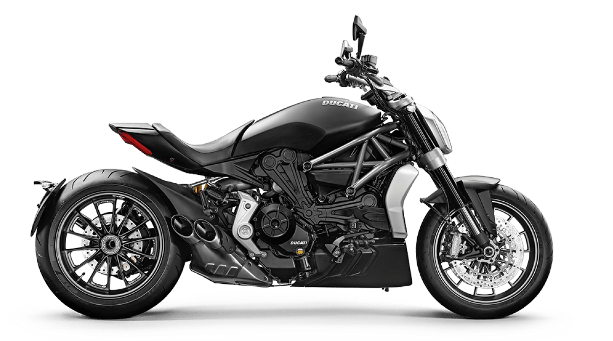

Ducati enters the Cruiser world and does so in its very own way, presenting a revolutionary bike, with technological content and performance that is typical of its DNA. The Ducati XDiavel represents the best of both worlds. The Ducati world: thrilling performance, sporty power, advanced electronics. The cruiser world: long, low, forward positioned footpegs, powerful torque even at low speeds, no compromise in terms of materals and finishes. The XDiavel is low speed excitement: relaxed low-speed riding,typical of the cruiser, combined with the excitement and the adrenaline of sports riding that charaterise every Ducati.



5,000. The number of revolutions per minute at which the new Ducati Testastretta DVT 1262 reaches maximum torque, equal to 12.8 kgm. This level of rpms is decidedly low for a Ducati twin cylinder, but it's perfect for the relaxed ride of a true cruiser. Moreover, at just 2,100 rpm the XDiavel engine guarantees a torque of more than 10 kgm and an extremely flat curve up to the limiter.
1262 cc
POWER152 hp (112 kW) @ 9500 rpm i
TORQUE93 lb-ft (126 Nm) @ 5,000 rpm i
DRY WEIGHT220 kg (485 lb)
SEAT HEIGHT755 mm (29,72in)
SAFETY EQUIPMENTBosch cornering ABS, Ducati Traction control (DTC), Riding Modes
MAINTEINANCE SERVICE INTERVALS9,000m/12 Months
This website has been created as part of an assignment in an approved course of study for Curtin University and contains copyright material not created by the author. All copyright material used remains copyright of the respective owners and has been used here pursuant to Section 40 of the Copyright Act 1968 (Commonwealth of Australia). No part of this work may be reproduced without consent of the original copyright owners.